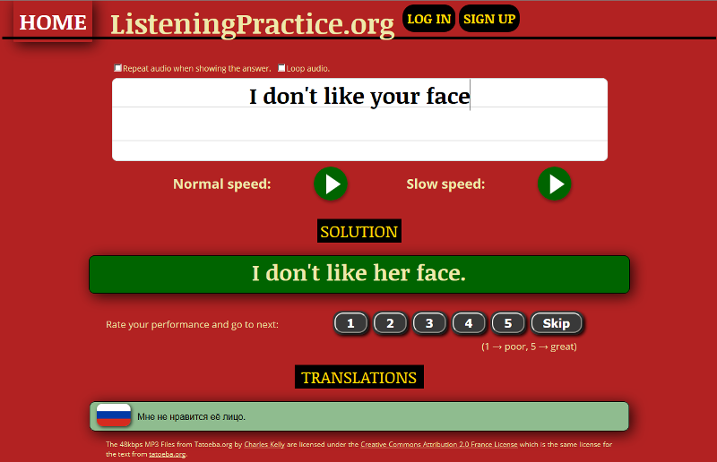

Проработка навыков аудирования английской речи
http://www.listeningpractice.org
Дается фраза на английском, нужно ее прослушать и записать текстом. Есть возможность прослушать в нормальном темпе и в замедленном. Далее для проверки показывается правильный текст фразы на английском языке, и показывается перевод на русский. Человек сам оценивает, правильно ли он услышал и записал фразу, и сам ставит себе оценку (почему так сделано - вопрос спорный. Похоже, что проблема в том, что даже носитель языка не может точно записать то, что он услышал. И заморачиваться со свякими were not и weren't авторы сайта не стали).
Для начала тренировок регистрации не требуется. На сайте можно тренировать не только аудирование английского языка, но и штук 15 других. Вначале выбирается язык, который нужно потренировать. Потом выбирается уровень сложности и язык, на котором нужно показывать перевод. Далее при нажатии кнопки Start начинается тренировка.
Выглядит страница тренировки вот так:

https://dialangweb.lancaster.ac.uk
http://forum.language-learners.org
http://how-to-learn-any-language.com/forum/
http://iteslj.org/questions/